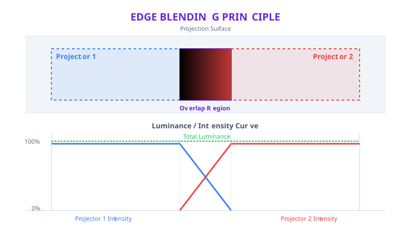

Edge Blending
Edge blending is the process of smoothing the overlap region between two or more adjacent display outputs so that they appear as a single, continuous image. In any multi-projector or multi-display installation where outputs are tiled side by side, the overlapping edges would normally produce a bright, visible seam — the area where both outputs contribute light adds up to noticeably higher brightness than the surrounding image. Edge blending eliminates this by applying complementary intensity gradients across the overlap zone: each output fades down toward its edge so that the combined brightness in the overlap matches the single-output brightness everywhere else.
Without edge blending, audiences see hard lines or bright bands wherever two outputs meet. With proper blending, the seam disappears and the entire surface reads as one unified image.

When Edge Blending Is Needed
Edge blending is used whenever two or more display outputs overlap on the same surface and the goal is a seamless combined image. Common scenarios include:
- Wide-format projection — when the desired image width exceeds what a single projector can cover, two or more projectors are tiled horizontally with their edges overlapping. Edge blending hides the seams so the audience sees one panoramic image.
- Tiled projector arrays — large-scale displays built from grids of projectors (for example, 2×2 or 3×3 arrays) require blending at every internal boundary. Without it, a visible grid of bright seams would divide the image.
- Curved screens and cylindrical surfaces — projectors aimed at a curved screen overlap at irregular angles. Blending compensates for the varying overlap width that results from surface curvature.
- Domes and immersive environments — fulldome or immersive room installations use many projectors whose outputs tile across a non-planar surface. Blending is essential for maintaining the illusion of a continuous environment.
- Projection mapping with overlap handoff — when mapping content onto architectural or scenic surfaces, adjacent projectors may share responsibility for a region of the surface. Blending ensures that the handoff between projectors is invisible.
- LED wall composites — in configurations where multiple LED processors feed adjacent sections of a wall and those sections are modeled as separate WATCHOUT displays, blending may be used at the overlap boundaries if the outputs are designed to overlap.
The general rule is: if two outputs contribute light to the same physical area and you want the result to look like a single image, you need edge blending.
How Edge Blending Works
Edge blending operates on a simple optical principle. In the overlap zone, both outputs are projecting onto the same surface. If both outputs are at full brightness, the overlap area is approximately twice as bright as the rest of the image. To fix this, each output applies a gradient that ramps its brightness down from full to zero across the overlap width. The two gradients are complementary — where one output is at 80%, the other is at 20% — so that at every point in the overlap, the combined brightness equals the single-output brightness.
In WATCHOUT, this is implemented by converting the overlap geometry into gradient-intensity meshes. The renderer modifies the alpha (opacity) of pixels near the display edge so that brightness falls off smoothly across the blend zone.
Gamma and the Blend Curve
A linear brightness ramp does not always produce a perceptually smooth result. Because displays and projectors have non-linear brightness response curves (gamma), a simple linear fade can produce a visible dark dip or bright bump at the midpoint of the overlap. To compensate, the blend gradient is shaped by a gamma correction parameter — sometimes called soft-edge gamma — that adjusts the intensity curve of the falloff.
- A gamma value that is too low produces a dark band at the blend center (the two fading outputs do not add up to full brightness perceptually).
- A gamma value that is too high produces a bright band (the overlap adds up to more than full brightness perceptually).
- The correct gamma produces a flat, uniform brightness across the entire blend zone.
The optimal gamma value depends on the display technology, the viewing environment, and the black level of the projectors. It is always validated visually using test content.
Blend Control Methods
WATCHOUT provides several ways to set up and refine edge blending, ranging from fully automatic to fully manual. Choose the method that fits your display configuration and the precision you need.
Automatic Soft Edges
The Automatic Soft Edges feature, found in the Mask section of Device Properties, is the fastest way to set up basic blending. When enabled, WATCHOUT detects where displays overlap on the stage and automatically generates soft-edge gradients in those regions.
Automatic soft edges have their own Gamma Correction slider (range 0.5–1.5, default 1.0) that controls the intensity falloff of the generated gradients. This setting is separate from any per-surface gamma on custom masks.
Use automatic soft edges when:
- Displays are flat, rectangular, and overlap in a straightforward horizontal or vertical arrangement.
- The overlap width is consistent across the full edge.
- You want a quick setup that you can refine later if needed.
Automatic soft edges are not available for projector-type displays or canvas displays. For these configurations, use custom masks to build the blend zone manually. See Display Masks for details.
Mask-Based Shaping
When the automatic approach does not produce satisfactory results — for example, on non-planar surfaces, with uneven overlap widths, or when scenic boundaries intersect the blend zone — you can build the blend manually using custom mask surfaces.
The process involves placing mask junction points along the overlap boundary and setting their alpha values to create a graduated transition that matches the neighboring display's mask. Each mask surface has its own gamma correction parameter, giving you independent control over the blend curve on each side of the overlap.
This method offers full control over:
- The exact shape of the blend boundary (straight, curved, or irregular).
- The width of the feathered transition at each point along the edge.
- The gamma response of the fade.
For a complete guide to mask junction editing, built-in mask presets (Left, Right, Top, Bottom, Rectangular, Round), mask images, and gamma correction, see Display Masks.
Manual Warp/Mask Refinement
On irregular or curved surfaces, the blend zone may not follow a simple geometric boundary. In these cases, combine Warp Geometry corrections with custom masks:
- Use warp to align each projector's output to the physical surface so that geometry is correct.
- Use masks to define the blend zone on the corrected output.
Because masks are applied after warp in the rendering pipeline, mask coordinates always correspond to the final (post-warp) display surface. This means you can adjust the warp mesh without invalidating the mask, as long as the mask points are updated to follow any significant changes in the corrected output shape.
Relationship to Warp Geometry and Masks
Edge blending, Warp Geometry, and Display Masks are three independent systems that work together in a specific order within WATCHOUT's rendering pipeline:
- Compositing — all cues are composited into the display's output buffer.
- Warp geometry — the warp mesh transforms the entire composited output, repositioning pixels to match the physical surface.
- Display masks — applied after warp, controlling which pixels are visible and shaping edges and blend zones. Mask coordinates correspond to the final (post-warp) surface.
- Soft-edge gradients — automatic soft edges are generated based on overlap detection and applied as part of the mask/alpha stage.
Each system has a distinct role:
| System | Purpose |
|---|---|
| Warp geometry | Corrects surface geometry — makes the image fit the physical shape |
| Display masks | Shapes the visible boundary — hides spill, defines blend zones, cuts output to scenic limits |
| Edge blending | Feathers brightness in overlap regions so adjacent outputs appear seamless |
As a general rule: get warp geometry correct first, then apply masks and edge blending on top of the corrected output. Attempting to blend before the geometry is aligned produces inconsistent overlap widths and makes the seam harder to eliminate.
Calibration Workflow
Setting up edge blending is an iterative process. Follow this sequence for reliable results:
- Complete physical alignment. Mount and aim projectors as accurately as possible. The less the software needs to compensate, the better the final blend quality. Ensure overlap width is sufficient — overly narrow overlaps leave no room for a smooth gradient and make seams much harder to hide.
- Align projector geometry with warp. Use Warp Geometry to correct each output so that the projected image matches the physical surface. Verify that straight lines in the content remain straight on the surface and that adjacent outputs align at their overlap boundaries.
- Enable soft edges and review overlap zones. Turn on automatic soft edges (if the display type supports them) and inspect the blend zone. Look for:
- Even brightness across the overlap at full white.
- No visible bright or dark bands at the blend center.
- Correct overlap width — the gradient should span the entire overlap, not stop short.
- Adjust gamma. If the blend center appears too dark or too bright, adjust the soft-edge gamma until the overlap reads as a flat, uniform brightness when viewing a full-white test image.
- Fine-tune with masks where needed. If the automatic blend is unsatisfactory — for example, because the overlap boundary is not a simple straight line — switch to custom mask surfaces and manually define the blend zone shape and alpha gradient.
- Match black levels and color. Even a perfect blend gradient cannot hide mismatched black levels or color temperature between projectors. Use the per-display White Point (R, G, B) sliders to match color temperature, and adjust projector settings to match black levels as closely as possible.
- Validate with test content. Verify the blend using multiple types of test content (see the next section). Small errors that are invisible with a solid white field may become obvious with high-contrast or motion content.
Validation with Test Patterns
Use WATCHOUT's built-in Test Patterns and purpose-made test content to verify blend quality at each stage:
- White mode — switch all overlapping displays to White mode simultaneously. The overlap zone should appear the same brightness as the surrounding single-output areas. A bright band means gamma is too high or the overlap width is incorrect. A dark band means gamma is too low.
- Masked mode — shows the output after warp and mask processing. Use this to verify that mask boundaries align correctly and that the blend zone has the expected shape and width.
- Pattern mode — renders a grid test pattern through the full pipeline including warp, mask, and soft edges. Grid lines from adjacent displays should align continuously across the blend boundary. Misalignment indicates a warp or placement error, not a blending problem.
- Grayscale ramp — a horizontal or vertical gradient from black to white is particularly sensitive to blend errors. Discontinuities in the ramp at the overlap boundary reveal gamma mismatches or incorrect overlap width.
- Representative show content — play back actual show media at final brightness. Motion content, high-contrast graphics, and saturated colors can all reveal blend artifacts that are invisible with static test images.
Test blending at multiple brightness levels (25%, 50%, 75%, 100% white), not just full brightness. Gamma errors are often most visible at mid-brightness levels.
Common Pitfalls and Fixes
| Problem | Cause | Fix |
|---|---|---|
| Bright band at the overlap center | Soft-edge gamma too high | Lower the gamma value until the band disappears |
| Dark band at the overlap center | Soft-edge gamma too low | Raise the gamma value until the band disappears |
| Visible seam at very low brightness | Projector black levels do not match | Adjust projector black-level settings or add mechanical black-level compensation (e.g., black masks on the projector lens) |
| Color shift in the overlap zone | Color temperature differs between projectors | Use per-display White Point sliders to match R/G/B balance; also check projector color mode settings |
| Non-uniform brightness across the blend | Projector brightness is not uniform across its output field | Use brightness uniformity correction on the projector (if available) or adjust mask alpha values to compensate locally |
| Blend looks correct at center but not at edges | Overlap width varies across the edge (e.g., due to surface curvature) | Switch from automatic soft edges to custom masks and set per-point alpha values that follow the actual overlap width |
| Grid lines misaligned at the blend boundary | Warp geometry or placement error, not a blending issue | Correct warp mesh junction points at the overlap edge; re-verify with Pattern test mode |
Best Practices
- Control the environment. Blend calibration is most reliable in a controlled lighting environment. Ambient light makes it harder to judge subtle brightness differences in the overlap zone. Calibrate in the same lighting conditions the show will run in.
- Allow projector warm-up. Projector brightness and color temperature shift during warm-up. Wait until output has stabilized (typically 15–30 minutes) before calibrating blends.
- Use sufficient overlap width. A wider overlap gives the gradient more room to fade smoothly, making the seam easier to hide. As a guideline, overlaps of 10–20% of the projector's output width are common. Narrower overlaps (below 5%) are much harder to blend invisibly.
- Document non-default values. Record soft-edge gamma settings, custom mask configurations, and white-point adjustments for each display. These values are critical for show handoff, reproductions in different venues, and troubleshooting after transport.
- Version your blend state. Save the show file after successful blend calibration. After transport, re-rigging, or lamp/lens changes, revisit blend settings and fine-tune rather than starting from scratch.
- Blend after warp, not before. Always complete warp geometry correction before setting up edge blending. Changing warp after blending is configured can shift the overlap boundaries and invalidate the blend.
- Re-validate after any physical change. Moving a projector, replacing a lamp, or changing a lens affects both geometry and brightness. Re-check warp alignment, blend gamma, black levels, and color match after any physical modification.